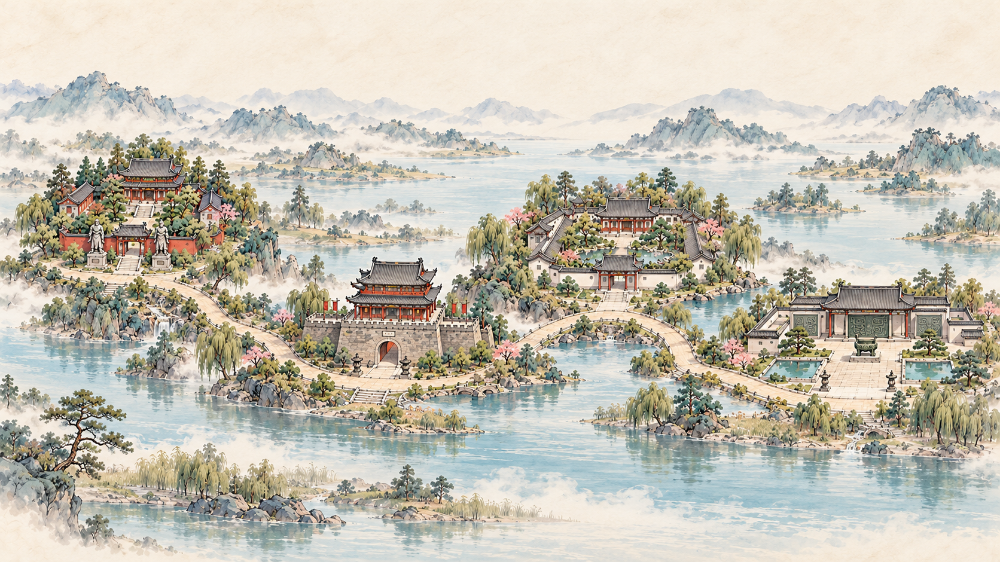

YOUR JOURNEY
从进入游戏，到留下印章
- 01
进入游戏长卷
前往在线游玩页，展开山水长卷，按入口提示开启旅程。
- 02
选择文化地标
点击长卷上的建筑或题签，选择想去的站点；途中可按原界面提示暂停或跳过赶路。

四境同卷 · 自由寻踪 - 03
完成互动任务
抵达地标后先阅读文化内容，再开始探索。不同站点的操作不同，按当前页面提示完成任务。
- 关羽祠
- 移动棋子，疏通出口，完成后领取印记。
- 宾阳楼
- 识船守城；空格开火，Q 使用技能，Z / X / C 切换武器，也可用页面控件。
- 张居正
- 阅读奏报、选择策略、提笔票拟，查看结果后按流程返回。
- 博物馆
- 浏览展柜、观察与修复，完成本局三件并回到展厅才计整关完成。
- 04
收集文化印章，返回长卷
按站点完成流程领取文化印记，回到长卷查看散雾与完成状态，再开启下一站。
启程小笺
留一点时间，慢慢看荆州
四处地标没有固定的游览顺序。可以从熟悉的故事出发，也可以让一座建筑、一件器物带你走向新的发现。
想先熟悉操作，可以阅读玩法指南；准备好后，就让长卷为你展开。
阅读玩法指南 →继续探索 / DISCOVER MORE